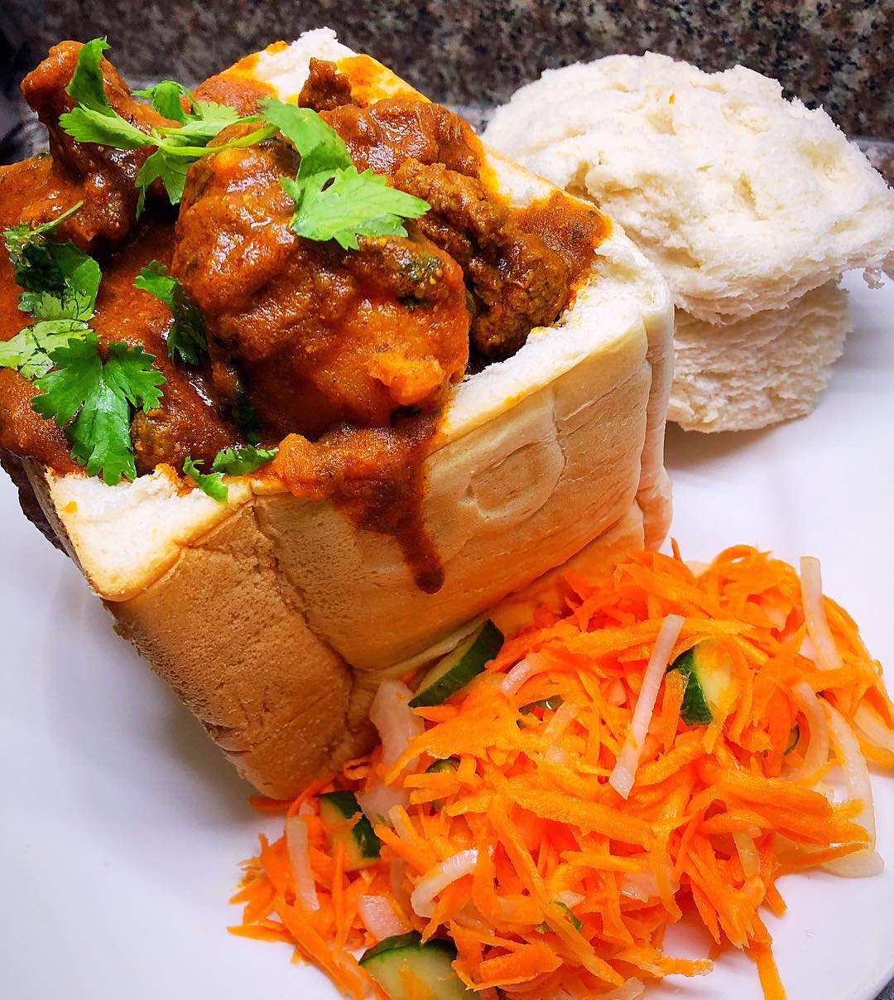

Bunny Chow

Mutton bunny chow
A bunny chow is basically made from half a loaf of bread, though one can go smaller as needed. The bread must be hollowed out
to make space for mutton or vegetable curry, though beef or chicken will work in a pinch.
Ingredients
- 1kg lamb pieces
- Oil
- 2 cinnamon sticks
- 1tsp fennel seeds
- 1 bay leaf
- 6 green Cardamoms
- 4 Cloves
- A sprig of curry leaves
- 1 tsp crushed green chillies
- 1 onion, finely diced
- half tsp Tumeric
- 2 tbles crushed Ginger and Garlic
- 1 tbles Vinegar
- 2 tsp Sugar
- 3 tsp medium Chilli powder
- 2 tsp Cumin powder
- 2 blended Tomatoes
- 5 small quartered potatoes
- Chopped fresh Coriander
- Salt to taste
Steps
- Cover pot's base with oil
- Heat oil
- Add Cinnamon, Cardamom, Cloves, Bay leaf and Fennel
- Stir
- Add curry leaves, chillies, onion, tumeric, ginger and Garlic
- Braise for 3-4 minutes
- Add spices, vinegar and sugar then mix well
- Add lamb pieces and salt
- Mix until meat is coated well
- Cover pot and cook/braise in moderate heat for a few minutes
- Stir until meat is well braised. Add potatoes
- Add water as needed to make the curry saucy
- When potatoes are almost cooked, add tomatoes
- When potatoes are almost soft, stir and add Coriander
- Fill hollow part of bread and serve with salad